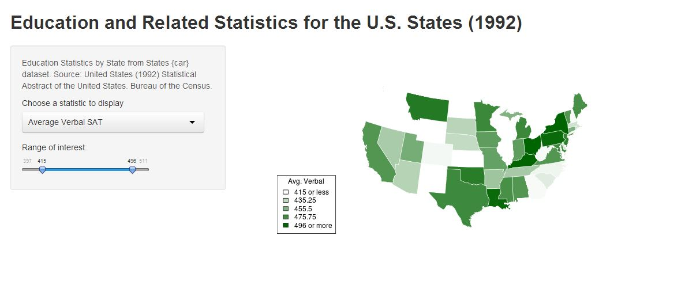

- Dynamic map displays selected variables from data set
- Slider input allows selection of range of values displayed
- Uses reactive server code to dynamically set ranges for selected variables
wmaes

Think Midwestern
That's right. Iowa also had the highest average Math SAT scores.